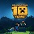

hello
this is a Website about MINECRAFT
title1
Minecraft is a sandbox video game created by Swedish game developer Markus Persson and released by
Mojang in 2011. The game allows players to build with a variety of different blocks in a 3D procedurally
generated world, requiring creativity from players. Other activities in the game include exploration,
resource gathering, crafting, and combat. Multiple game modes that change gameplay are available,
including—but not limited to—a survival mode, in which players must acquire resources to build the
world and maintain health, and a creative mode, where players have unlimited resources to build with.
The Java Edition of the game allows players to modify the game with mods to create new gameplay
mechanics, items, textures and assets.

title1
Minecraft received critical acclaim and has won numerous awards and accolades. Social media,
parodies, adaptations, merchandise, and the MineCon convention played large roles in popularizing
the game. It has also been used in educational environments (Minecraft Education Edition), especially
in the realm of computing systems, as virtual computers and hardware devices have been built in it.
By May 2019, over 176 million copies had been sold across all platforms, making it the best-selling
video game of all time. In September 2014, Microsoft announced a deal to buy Mojang and the
Minecraft intellectual property for US$2.5 billion, with the acquisition completed two months
later. A spin-off game titled Minecraft: Story Mode has also been released. By mid-2018, the
game had around 91 million active players monthly.
title1
Gameplay
Minecraft is a 3D sandbox game that has no specific goals to accomplish, allowing players
a large amount of freedom in choosing how to play the game.[20] However, there is an achievement system.]
[21] Gameplay is in the first-person perspective by default, but players have the option for third-person
perspective.[22] The game world is composed of rough 3D objects—mainly cubes and fluids, and commonly
called "blocks"—representing various materials, such as dirt, stone, ores, tree trunks, water, and lava.
The core gameplay revolves around picking up and placing these objects. These blocks are arranged in
a 3D grid, while players can move freely around the world. Players can "mine" blocks and then place
them elsewhere, enabling them to build things.[23]
title1
The game world is virtually infinite and procedurally generated as players explore it, using a map seed
that is obtained from the system clock at the time of world creation (or manually specified by the player)
.[24][25][26] There are limits on vertical movement, but Minecraft allows an infinitely large game world
to be generated on the horizontal plane. Due to technical problems when extremely distant locations are
reached, however, there is a barrier preventing players from traversing to locations beyond 30,000,000
blocks.[nb 1] The game achieves this by splitting the world data into smaller sections called "chunks"
that are only created or loaded when players are nearby.[24] The world is divided into biomes ranging
from deserts to jungles to snowfields;[27][28] the terrain includes plains, mountains, forests, caves,
and various lava/water bodies.[26] The in-game time system follows a day and night cycle, and one
full cycle lasts 20 real-time minutes.
title1
A few of the monsters in Minecraft, displayed from left to right: the zombie, spider, enderman, creeper,
and skeleton.
Players encounter various non-player characters known as mobs, such as animals, villagers, and hostile
creatures.[29] Passive mobs can be hunted for food and crafting materials, such as cows, pigs, and chickens. They spawn in the daytime, while hostile mobs spawn during nighttime or in dark places such as caves—including large spiders, skeletons, and zombies.[26] Some hostile mobs such as zombies, skeletons and drowned (underwater versions of zombies), burn under the sun if they have no headgear.[30] Other creatures unique to Minecraft include the creeper (an exploding creature that sneaks up on the player) and the enderman (a creature with the ability to teleport, pick up, and place blocks).[31] There are also variants of mobs that spawn in different conditions, for example zombies have husk variants that spawn in deserts.[32]
title1
Many commentators have described the game's physics system as unrealistic.[33] Liquids continuously flow
for a limited horizontal distance from source blocks, which can be removed by placing a solid block in
its place or by scooping it into a bucket. Complex systems can be built using primitive mechanical
devices, electrical circuits, and logic gates built with an in-game material known as redstone.[34]
Minecraft has two alternative dimensions besides the overworld (the main world): the Nether and the End
.[31] The Nether is a hell-like dimension accessed via player-built portals; it contains many unique
resources and can be used to travel great distances in the overworld.[35] The player can build an
optional boss mob called the Wither out of materials found in the Nether.[36] The End is a barren
land consisting of many islands. A boss dragon called the Ender Dragon dwells on the main island.
[37] Killing the dragon cues the game's ending credits and a poem written by Irish novelist Julian
Gough.[38] Players are then allowed to teleport back to their original spawn point in the overworld
and continue the game indefinitely.[39]
title1
The game consists of five game modes: survival, creative, adventure, hardcore, and spectator. It also
has a changeable difficulty system of four levels. For example, the peaceful difficulty prevents hostile
creatures from spawning, and when playing on the hard difficulty players can starve to death if their
hunger bar is depleted.[40][41]